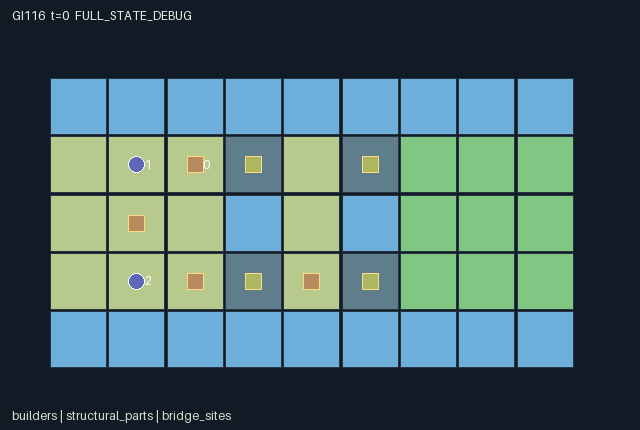

GI116 / SPATIAL
异构工具造桥
支撑者、建造者与搬运者能力不同；活体支撑提高桥面承重并减缓结构衰减。
Original saved demonstration
Recorded native state, often authored scripts or interventions; information scope and failures are preserved in the original provenance. This is a saved demonstration, not live browser play.

Release verification episode
Untrained uniform legal actions. Actual JAX state sampled along the full original episode; full-state debug camera. No human performance or learning claim.

Run this game
crucibles play --game 116
Start Python locally, then open the address printed by the terminal. Installation, multiplayer, takeover and keyboard controls →
Objective, rewards & ending
Exact task contract
{
"objective": "Bring all three crew members to x>=6 across two channels using four reusable parts and temporary spans.",
"natural_termination": "All crew physically occupy far-bank ground simultaneously; otherwise truncate at tick 144. A previously arrived crew member may return to help, and arrival reward is not repeated.",
"interaction": "Mass equals one plus carried part count. Unbraced spans carry mass one; braced spans carry mass two. The builder consumes a held part to install a span, the stabilizer sustains it, and the porter cannot cross while holding two parts. Consent-based handoffs and bridge recovery move exactly existing material identities.",
"observation_access": "Map, roles, all part locations and owners, bridge support/lifetime/capacity and current crew locations are public. The acting role receives its identity one-hot. There are no private fields.",
"transition_order": "Movement uses existing spans/capacities and rotating mass arbitration; pickup/drop and consent-based handoffs follow; support decays or is renewed; the builder installs or retrieves a span; unsupported lifetime decays; overload/expiry collapses return parts and affected crew to the western bank; arrivals and termination follow."
}Declared per-step reward bounds: -2.0 to 12.0. Observability: fully_observable.
Rules
- Four identified parts may lie on land, be carried or be installed. No part is created or destroyed.
- The stabilizer carries zero parts, builder one and porter two. Body mass is one plus the current load.
- Installed unbraced spans support total mass one; a live brace raises it to two and prevents lifetime decay.
- Only the builder assembles or retrieves spans. Only the stabilizer renews support. Part handoff needs give and receive in the same step.
- Land permits co-location; simultaneous bridge entries are resolved in rotating order against actual total mass.
- Unsupported spans expire. Expiry or overload returns their material and any falling crew and held parts to the socket western bank.
- All three crew must be on the far bank together. First arrivals pay once; collapses can cause delays and negative reward.
- The dynamic span tiles and part locations derive from real state. This package contains no executed crossing proof.
Original mechanism document (historical status wording retained)
# Bridge builders with unequal tool kits
Status: **AUTHORED_NOT_EXECUTED**. Candidate `game-v3-00116`, source attempt 0, source split train, final test unused.
## Spatial rules and cross-agent dependence
The 9 by 5 archipelago has a western island, a one-column middle island and a far bank, with four fixed bridge sockets across two channels. Northern and southern socket rows offer different construction routes. Four named structural parts exist: three on the west island and one reset-randomized between the two ends of the middle island. A part is always on ground, held by one crew member or installed at one socket. The same identity and real position are retained through pickup, handoff, installation, recovery and collapse.
The three unequal tool kits are fixed. The stabilizer cannot carry material and alone can brace a nearby socket. The builder carries one part and alone can install or retrieve a span. The porter carries up to two parts and can offer one to an adjacent agent that simultaneously chooses receive. Carrying capacity is checked on actual ownership; a give command without consent does not transfer. There is no abstract credit balance that substitutes for the parts.
Crossing mass equals one plus carried part count. A span with no live support carries total mass one; live support raises capacity to two. Therefore a builder carrying a part or a porter carrying one part needs support, and a porter carrying two parts cannot enter any span. Land allows co-location, while bridge movements are resolved in rotating order against actual mass already at the destination. One actor's entry can thus consume the remaining capacity available to another.
A brace renews the first nearby socket in fixed socket order to ten ticks; it is not a directional action or an arbitrary site selector. A newly installed span starts with lifetime twelve before that transition's maintenance. Unsupported life immediately loses one per transition. While supported, life does not decay and is at least six. Expiration or overload collapses a span. Its part and every falling crew member, including held parts, return to that socket's western bank. This explicit recovery rule conserves material while imposing time and fall penalties; it is not a realistic structural-engineering model. The far bank must contain all three crew simultaneously for natural completion.
Every role receives two units per first crew arrival, five for joint completion, minus one half per falling person and 0.01 per tick. First-arrival flags prevent farming the arrival reward by returning. A returning agent can still provide useful support or transport before joint completion. The map, part owners, load, tool role, span life, support and capacity are all public.
## Partner-dependent strategies and limits
One construction plan supports a northern span while the porter carries a second part across and consents to hand it to the builder for the second channel. Another plan can use the middle-island part after the first crossing, retrieve an unused span, or build along the southern sockets. Maintaining a span at the expense of moving the stabilizer, reducing load through a handoff, and sequencing bridge entry all depend on the other roles. Shared rewards do not eliminate a non-cooperating porter's withholding or a stabilizer's departure.
The main seed-11601 witness proposes a supported first crossing, physical porter-to-builder handoff, second-span assembly and staged completion. It remains unexecuted. Fixed tie rules, support expiration, capacity arbitration or an implementation defect may prevent the intended crossing. The paired test has an identical pickup/build prefix, keeps the loaded porter's east action fixed and varies only the stabilizer's brace. It is intended to produce a permitted mass-two entry in A and a blocked entry in B. Record actual load, support, capacity and positions rather than inferring interaction from shared reward.
No gain in the short suffix is required: neither branch may yet reach the goal, and extra support can consume time without a corresponding later benefit. A wrong prefix or depleted lifetime can erase the intended contrast. Collapse and negative returns remain valid outcomes.
Changing toolkit allocation, support duration, socket placement, material starting positions or the mass rule could alter which ordering or route works. Except for the declared middle-island part reset variation, these are unimplemented future hypotheses. Static contracts do not establish multiple successful routes or adaptive transfer.
## Literal source evidence
- Material ownership determines installed spans: `candidate.py:19` contains `n['built'] = jnp.any(s['part_owner'][:, None] == (3 + jnp.arange(4))[None, :], axis=0)`.
- Actual installed span tile rendering: `candidate.py:20` contains `n['render_tiles'] = s['tiles'].at[s['bridge_pos'][:, 1], s['bridge_pos'][:, 0]].set(jnp.where(n['built'], 4, 2))`.
- Total crossing mass: `candidate.py:79` contains `mass = jnp.sum(jnp.where(occupants, 1 + s['load'], 0)) + 1 + s['load'][i]`.
- Physical movement admissibility: `candidate.py:81` contains `allowed = (tile == 0) | (tile == 3) | (jnp.any(at_bridge) & s['built'][bi] & (mass <= s['capacity'][bi]))`.
- Unequal carrying kits: `candidate.py:84` contains `carry_limit = jnp.array([0, 1, 2], jnp.int32)`.
- Two-sided handoff consent: `candidate.py:102` contains `receivers = (a == 9) & (jnp.arange(3) != i) & (n['load'] < carry_limit) & (`.
- Real part transfer: `candidate.py:108` contains `give = (a[i] == 8) & jnp.any(held) & jnp.any(receivers)`.
- Support renewal: `candidate.py:114` contains `brace = (a[0] == 7) & jnp.any(brace_near)`.
- Builder-only material installation: `candidate.py:121` contains `build = (a[1] == 6) & jnp.any(empty_site) & jnp.any(held)`.
- Expiry or overload collapse: `candidate.py:136` contains `collapsed = n['built'] & ((n['life'] <= 0) | (mass > n['capacity']))`.
- Conserved span recovery: `candidate.py:143` contains `lost_span = deployed & collapsed[part_site]`.
- Current-position natural completion: `candidate.py:157` contains `n['terminated'] = jnp.all(n['agent_pos'][:, 0] >= 6)`.
- Absorbing terminal projection: `candidate.py:162` contains `n = {k: jnp.where(s['done'], s[k], n[k]) for k in s}`.
Method ranges: refresh at candidate.py:12-25; reset at candidate.py:27-50; observe at candidate.py:52-61; legal_actions at candidate.py:63-64; raw_step at candidate.py:66-165.
## Literal interface and execution boundary
The author supplied three-agent flat float32 observations, int32 joint actions, fixed-shape dictionary state and homogeneous discrete command attempts. The exact dimensions, every leaf, every observation column, reward bounds, actions and spatial bindings are in manifest.json. Unmet command prerequisites produce no effect; out-of-range integers are converted to wait. Each live raw transition advances t once. Natural completion takes precedence over an equal-tick timeout. Already-terminal raw calls preserve every state leaf, observation and clock, return zero reward and preserve actual terminal causes. There is no raw autoreset.
No candidate was imported or called. No JAX/NumPy import, compilation, numerical game call, training, model API, installation, SSH or remote work occurred during authoring. Standard-library AST and supplied data validators may establish only their literal static checks. They do not establish interface execution, numerical parity, conservation over actual traces, strategic richness, solvability, policy learning or transfer. AUTHORED_NOT_EXECUTED is the package status. The JaxMARL-compatible public dictionary adapter, real replay, RGB animation, interactive playback and role-view audit belong to the separately authorized implementation/validation stage and are not delivered or claimed here.
The playthrough JSON uses literal seeds and joint integer vectors. A trusted runner should use jax.random.PRNGKey(seed) for reset, then jax.random.fold_in(reset_key, step_index+1) for raw-step keys; these are prospective instructions and were not executed. All four kernels use step keys only as interface inputs, so their transition stochasticity is reset-derived. Scripts stop at joint done. They are author hypotheses, not successful trajectories or acceptance gates. Paired tests freeze the shared prefix and the non-intervened actions; they must retain zero, negative, mixed, failure and indeterminate outcomes.
The source uses int32 for small integer categories, owners and counters and bool for masks/terminal causes. The uint32 PRNG key remains trusted trajectory provenance rather than a duplicated state leaf. Render data is declarative. Map and entity positions bind real state. An omniscient debug state, where provided later, must be labelled separately and never substituted for a role observation.
## Official ecosystem inspiration and source use
Only this batch's physically supplied official README excerpts were read for broad ecosystem context: JaxMARL separates MARL environments and algorithms and exposes multi-agent interfaces; Pgx exemplifies JAX-native board states, legal action masks and explicit step randomness; Craftax illustrates persistent spatial game state, inventories and separate reset/render interfaces. These are conceptual influences. No upstream source code, environment layout, asset, baseline or algorithm was copied into this original kernel.
The supplied JaxMARL README identifies Apache-2.0, the Pgx README Apache-2.0, and the Craftax README MIT. Those are descriptions of upstream snapshots, not a new license grant for this package; an original-package release license remains the coordinator's decision. PureJaxRL describes algorithm implementations rather than an environment library. Craftax_Baselines_ppo_rnn.py was supplied and hash-accounted for but was not opened or reused. No baseline replaces the frozen experimental learner. Exact source snapshot URLs and hashes are in generation_record.json; no batch-external source or candidate feedback was consulted.
Generating or replaying these rules would not establish large-scale meta-RL adaptation. Rule/role/map variations discussed above are future research hypotheses requiring their own frozen source, cost and information controls, and genuine train/develop/confirm/final-transfer evidence. They are not implemented variants or measured generalization.
Commands
Roles & abilities
agent_0 Stabilizer: braces nearby supports and has no carrying capacity
agent_1 Builder: carries one part, assembles or recovers spans
agent_2 Porter: carries two parts and hands them to the builder
Observation permissions
Training receives only the original observation rows. Role cameras use declared visibility; debug cameras are explicitly marked. Local benchmark records log debug exposure and role takeover history.
Exact observation layout
[
{
"slice": [
0,
3
],
"meaning": "Self role identity one-hot: stabilizer, builder, porter",
"visibility": "self"
},
{
"slice": [
3,
4
],
"meaning": "Elapsed ticks divided by 144",
"visibility": "public"
},
{
"slice": [
4,
49
],
"meaning": "Row-major base terrain /3; bridge installation is separately observed",
"visibility": "public"
},
{
"slice": [
49,
64
],
"meaning": "Three crew records: x/8,y/8,load/2,role/2,ever-arrived",
"visibility": "public"
},
{
"slice": [
64,
76
],
"meaning": "Four part records: x/8,y/8,(owner+1)/7; installed parts retain identity even though their separate sprite is inactive",
"visibility": "public"
},
{
"slice": [
76,
100
],
"meaning": "Four bridge records: x/8,y/8,built,life/12,support/10,capacity/2",
"visibility": "public"
},
{
"slice": [
100,
102
],
"meaning": "Cumulative collapse count /576 and fallen-person count /432; normalization uses finite episode maxima",
"visibility": "public"
}
]Entity visibility & attributes
[
{
"id": "builders",
"kind": "agent",
"count": 3,
"position": [
"agent_pos"
],
"active": [
"agent_active"
],
"visibility": [
"agent_visible"
],
"attributes": [
{
"state_path": [
"role"
],
"meaning": "Tool kit: zero stabilizer, one builder, two porter",
"display": "category"
},
{
"state_path": [
"load"
],
"meaning": "Number of held structural parts",
"display": "number"
},
{
"state_path": [
"arrived"
],
"meaning": "Has reached the far bank at least once",
"display": "flag"
}
]
},
{
"id": "structural_parts",
"kind": "object",
"count": 4,
"position": [
"part_pos"
],
"active": [
"part_active"
],
"visibility": [
"part_visible"
],
"attributes": [
{
"state_path": [
"part_owner"
],
"meaning": "Minus one ground, zero to two carrier, three to six installed bridge site",
"display": "category"
}
]
},
{
"id": "bridge_sites",
"kind": "landmark",
"count": 4,
"position": [
"bridge_pos"
],
"active": [
"bridge_active"
],
"visibility": [
"bridge_visible"
],
"attributes": [
{
"state_path": [
"built"
],
"meaning": "A physical span is currently installed",
"display": "flag"
},
{
"state_path": [
"life"
],
"meaning": "Remaining unsupported span lifetime",
"display": "bar"
},
{
"state_path": [
"support"
],
"meaning": "Remaining support timer",
"display": "bar"
},
{
"state_path": [
"capacity"
],
"meaning": "Allowed total crossing mass at this site",
"display": "number"
}
]
}
]Actual verification & provenance
Per-game execution receipt
{
"game": "gi116",
"status": "PASS",
"verification_revision": 2,
"source_sha256": "77e414f83595f8e956845a9273d39bf6e347e9f43075f77e97ffe07f8d39d772",
"seed": 20261101,
"runtime": {
"jax": "0.4.38",
"numpy": "1.26.4",
"devices": [
"TFRT_CPU_0"
]
},
"dimensions": {
"num_agents": 3,
"observation_size": 102,
"num_actions": 12,
"max_steps": 144
},
"checks": {
"eager_reset": {
"status": "PASS",
"seconds": 1.683762788772583
},
"observation_spaces_legal_masks": {
"status": "PASS",
"seconds": 0.22403645515441895
},
"eager_step": {
"status": "PASS",
"seconds": 2.2054216861724854
},
"jit_reset": {
"status": "PASS",
"seconds": 0.3858466148376465
},
"jit_step": {
"status": "PASS",
"seconds": 1.036078929901123
},
"eager_jit_integer_parity_float_measurement": {
"status": "PASS",
"seconds": 0.001041412353515625
},
"jit_vmap_reset": {
"status": "PASS",
"seconds": 0.28669309616088867
},
"jit_vmap_step": {
"status": "PASS",
"seconds": 1.9530558586120605
},
"outer_autoreset_api": {
"status": "PASS",
"seconds": 1.5621395111083984
},
"full_original_horizon_episode_and_render": {
"status": "PASS",
"seconds": 0.7020502090454102
}
},
"human_scores": null,
"browser_controls": "PENDING",
"failures": [],
"elapsed_seconds": 10.6713387966156,
"float_parity_max_abs": 0.0,
"numerical_parity": "EXACT",
"raw_terminal_absorbing": "PASS",
"terminal_outer_reset": "PASS",
"episode_steps": 144,
"scripted_random_returns": [
-1.4399999678134918,
-1.4399999678134918,
-1.4399999678134918
],
"terminal": true,
"demo_information": "FULL_STATE_DEBUG",
"demo_frames": 25,
"render_roles_checked": 3
}Chromium control verification
{
"game": "gi116",
"status": "PASS",
"human_scores": null,
"engineering": true,
"checks": [
"catalog_selected_and_real_native_reset",
"dom_queue_and_native_step",
"second_participant_ownership_and_native_joint_step",
"all_roles_individually_controllable_no_role_cap",
"explicit_debug_camera",
"release_to_pure_ai_without_reset"
],
"ui_sha256": "15b5861d23b3c42811865c954d5a988280bbfd21cf8e93754be2437a027158c5",
"seconds": 4.269754886627197
}Original identity and file hashes
{
"id": 116,
"key": "gi116",
"title": "异构工具造桥",
"summary": "支撑者、建造者与搬运者能力不同；活体支撑提高桥面承重并减缓结构衰减。",
"tags": [
"专长互补",
"承重协作"
],
"family": "spatial",
"dimensions": {
"num_agents": 3,
"observation_size": 102,
"num_actions": 12,
"max_steps": 144
},
"source_sha256": "77e414f83595f8e956845a9273d39bf6e347e9f43075f77e97ffe07f8d39d772",
"manifest_sha256": "b148d75469e728b7b9dc939ae02d14bdcb05ebe73d0d6b75d4cd69794e8b4312",
"files": [
{
"file": "candidate.py",
"sha256": "77e414f83595f8e956845a9273d39bf6e347e9f43075f77e97ffe07f8d39d772",
"bytes": 10612,
"origin": "work/exp_2/game_incubator_v3/community_games222_225_visualization_root222_v1/native154_candidate/registry/v2/games/game-v3-00116/candidate.py"
},
{
"file": "manifest.json",
"sha256": "b148d75469e728b7b9dc939ae02d14bdcb05ebe73d0d6b75d4cd69794e8b4312",
"bytes": 14191,
"origin": "work/exp_2/game_incubator_v3/community_games222_225_visualization_root222_v1/native154_candidate/registry/v2/games/game-v3-00116/manifest.json"
},
{
"file": "scene.json",
"sha256": "da6215f16e5bd4faea1b8593eca9e6a725bef1c446bd780e643790fbf6376eb2",
"bytes": 7103,
"origin": "work/exp_2/game_incubator_v3/community_games222_225_visualization_root222_v1/native154_candidate/registry/v2/games/game-v3-00116/scene.json"
},
{
"file": "mechanism.md",
"sha256": "dd70cd9e4300523d0cb1178596c8a1aa69890bc048cfb9e2deba2b4a1a993051",
"bytes": 10487,
"origin": "work/exp_2/game_incubator_v3/sources/game-v3-00116/attempt_00/mechanism.md"
},
{
"file": "playthrough.json",
"sha256": "8137737d10d5ae31fb90af8f2d523e52a448174bbd8c5577274bfc6cc1785f19",
"bytes": 4088,
"origin": "work/exp_2/game_incubator_v3/sources/game-v3-00116/attempt_00/playthrough.json"
}
],
"original_status": "NATIVE154_REFERENCE",
"original_saved_replay": true,
"release_validation": "PASS",
"human_scores": null,
"browser_validation": "PASS"
}